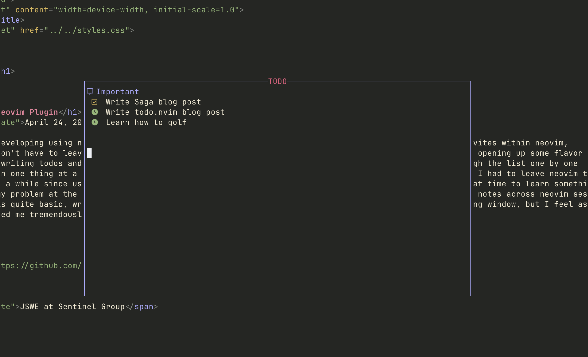

My First Neovim Plugin
April 24, 2025
I've been using Neovim for quite some time now, and I've been on a journey to keep my configuration minimal, but complete enough so that I don't have to leave Neovim for any coding related activities. Plugins such as Nvim-Dadbod and Kulala have helped me by providing a database client with and HTTP (and more) client respectively. As apart of my development workflow, I like to list out all the requirements, steps, and other important aspects of whatever it is I'm currently working on. This helps me to feel at ease because all my thoughts are written down already, and I don't need to remember any extra information which isn't currently relevant. My solution up to this point was to use the Notes app on MacOS. Since I wanted something directly integrated with Neovim, I figured this would be a great time to learn something new and solve my problem at the same time. The result of this is Todo.nvim, a plugin made by me to take persistent notes across Neovim sessions! The usage and implementation is quite basic, writing information to a file and displaying it with a markdown renderer in a floating window, but I learned a lot along the way. Here's a screenshot of what the UI looks like.

An example configuration using lazy package manager is below
return {
'Jack-Gitter/todo.nvim',
dependencies = {
'MeanderingProgrammer/render-markdown.nvim',
},
opts = {
fullpath = vim.env.HOME .. '/.config/todo.md',
},
config = function(_, opts)
local todo = require('todo')
todo.setup(opts)
end,
keys = { 'td' }
}
Overall, I learned a lot about the lua api within neovim. Despite it being a small plugin, it has helped me feel more immersed in my environment. Here is a link to the repository that contains the plugin. Repo Link